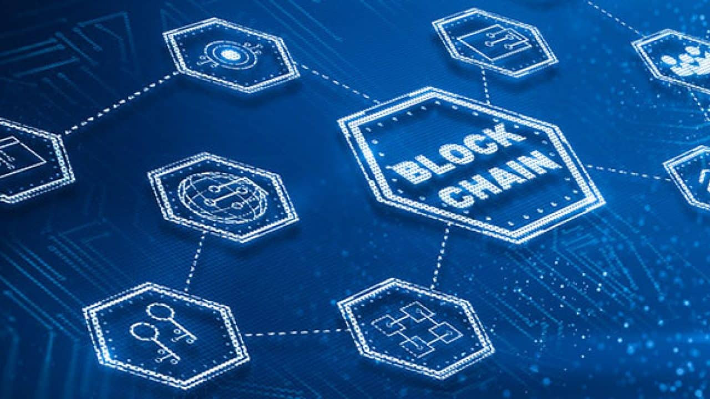

As tecnologias têm transformado a forma como vivemos, trabalhamos, nos comunicamos e nos relacionamos com o mundo ao nosso redor. Através delas, temos acesso a informações e recursos que antes eram inimagináveis.
Alguns exemplos de tecnologias que têm mudado o mundo são a internet, que nos conecta globalmente e torna possível o acesso a uma infinidade de informações, ou os smartphones, que permitem a comunicação instantânea e o acesso a diversas funcionalidades.
Por tanto, é importante estar sempre atualizado sobre as novidades tecnológicas para poder tirar o máximo proveito delas.
Intençigência Artificial
A Inteligência Artificial, ou IA, é uma tecnologia que permite a máquinas e sistemas aprenderem e executarem tarefas que antes só podiam ser realizadas por seres humanos. A IA tem aplicações em diversas áreas podendo ser usada para analisar grandes quantidades de dados e identificar padrões que seriam difíceis para os seres humanos detectarem. Além disso, a IA pode ajudar a automatizar tarefas rotineiras, permitindo que os humanos se concentrem em atividades mais criativas e estratégicas.
Internet das Coisas (IoT)
A Internet das Coisas, ou IoT, é uma tecnologia que permite a conexão entre objetos do dia a dia à internet, permitindo que eles possam ser controlados e monitorados remotamente. Essa tecnologia utiliza sensores, dispositivos de rede e softwares de análise de dados para coletar e transmitir informações em tempo real. Por exemplo, sensores instalados em equipamentos médicos podem transmitir dados em tempo real para médicos e enfermeiros, permitindo um acompanhamento mais eficiente dos pacientes. Apesar das vantagens, a IoT também apresenta desafios em relação à segurança e privacidade dos dados.
Realidade Virtual
A Realidade Virtual, ou VR, é uma tecnologia que permite ao usuário vivenciar um ambiente simulado em 3D através de um dispositivo de visualização, como um headset ou óculos. Essa tecnologia utiliza gráficos em 3D e rastreamento de movimento para criar uma experiência imersiva e interativa. Em jogos de VR, por exemplo, os usuários podem mergulhar em mundos virtuais e interagir com personagens e objetos como se estivessem realmente dentro do jogo.
Blockchain

Blockchain é uma tecnologia que permite o registro seguro e descentralizado de transações e informações em um registro digital distribuído. É um sistema imutável, transparente e à prova de adulterações. Uma das características mais importantes do Blockchain é a descentralização, pois não é controlado por uma única entidade ou autoridade central, o que o torna mais seguro e transparente. As transações são validadas por múltiplos participantes da rede e uma vez registradas, não podem ser modificadas.
Nano Tecnologia
A nanotecnologia é a ciência que estuda e manipula materiais em escala nanométrica, ou seja, em níveis muito pequenos, de 1 a 100 nanômetros. Essa tecnologia permite a criação de novos materiais e dispositivos com propriedades e características únicas, devido às propriedades químicas e físicas que surgem em escalas tão pequenas. No entanto, a nanotecnologia também apresenta desafios em relação à segurança e à ética, já que a manipulação de materiais em escala tão pequena pode ter consequências imprevisíveis.
Veículos Elétricos
São movidos por um motor elétrico alimentado por baterias recarregáveis, em vez de um motor a combustão interna. Eles têm se tornado cada vez mais populares devido à sua eficiência energética, baixo impacto ambiental e custo operacional mais baixo em comparação com os veículos movidos a combustão, além de um menor nível de ruído. Eles podem ser recarregados em casa ou em estações de recarga pública, tornando-os uma opção conveniente e econômica para muitas pessoas.
Cyber Segurança
A cibersegurança é a prática de proteger dispositivos eletrônicos, redes e dados contra ataques cibernéticos, que incluem roubo de informações, extorsão, espionagem e sabotagem. Com a crescente dependência da tecnologia em todos os aspectos da nossa vida, a cibersegurança tornou-se uma preocupação crítica para indivíduos, empresas e governos. As medidas de segurança cibernética incluem a implementação de firewalls, o uso de senhas fortes e criptografia de dados, além da conscientização e treinamento de usuários para evitar práticas inseguras.